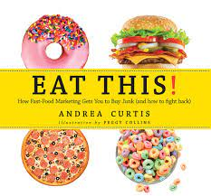
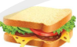
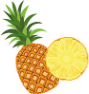

The Food Marketing Workgroup (FMW) is a network of more than 225 organizations and
academic experts dedicated to eliminating harmful food marketing
fmw aimed at those to obesity and other nutrition-related disease.
- social media advertising
- Email marketing
- planning
- place
- promotion
- product
- price
- content marketing
tools used in the food marketind and advertising
examples of food markerting
| 4. |  | sandwich | 10,000frw |
| 5. |  | pineapple | 2000frw |
| 3. | banana | 1000frw | |
| 4. |  |
mixture food | 10,000frw |
- meat
- fresh hen
- meat for pig
- juice
- fruit
food marketind and advertising
- television advertising
- in-school markerting
- product placements
- kids clubs
- the Internet
- toys and products with brand logos
- youth-targeted promotions
About food markerting Workgroup


advertising in food marketing
food marketing advertising is aimed to reach a wide range of people and age-levels
through various sources and platforms